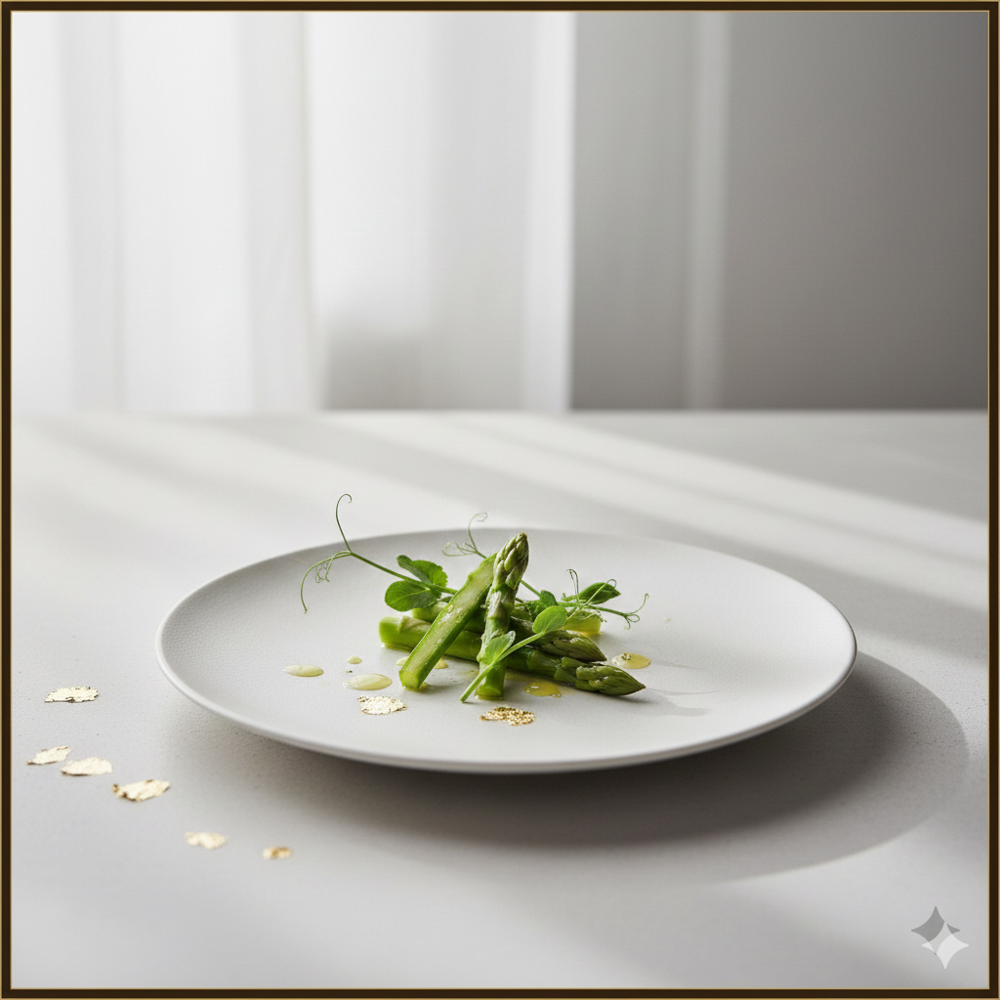

Crema de Espárragos Blancos
Textura sedosa con puntas de espárrago triguero y aceite de cebollino.
Vino: Manzanilla (Blanco)
La explosión de la huerta, flores comestibles y la sutileza de los productos más frescos.

Textura sedosa con puntas de espárrago triguero y aceite de cebollino.
Guisantes frescos salteados con perlas de jamón y caldo de vainas.
Cocinado al punto de nieve con emulsión de flores y brotes tiernos.
Costillar de cordero con puré de raíces dulces y ceniza de romero.
Esponjoso de almendra amarga con crema de limón y pétalos confitados.
168 EUR por persona